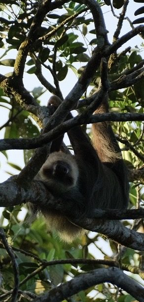

Caño
Costaricaans Spaans · uitgesproken: "KA-njo"
In Spanje is een caño een pijp of een tuit, iets waar water doorheen loopt. Hier is het een smal water dat zich door het bos snijdt. De caños van Tortuguero zijn de zijkanalen naast de rivier, waar de bomen van beide oevers elkaar bijna raken.
Weer vroeg op. San José was nog grijs toen de bus vertrok. Uren rijden, de stad uit, de bergen over, daarna werd het land vlakker en groener, tot de weg ophield.
Waar de weg ophield lag een boot. Tassen erin, wij erachter. Vanaf daar was water de weg.
De rivier werd smaller en de bomen kwamen dichterbij. Ik probeerde het groen te tellen en ben ermee gestopt. In de kruinen bewoog iets: apen. Eén bleef tussen twee takken zitten en keek terug, met een gezicht alsof hij het ergens niet mee eens was. Verderop hing een bruine bol in een boom. Pas toen ik lang genoeg keek, werd het een luiaard, ondersteboven, met zijn gezicht naar ons toe. Hij bewoog niet. Wij voeren door.

Caño past bij deze dag omdat de dag zelf smaller werd: van stad naar weg, van weg naar rivier, van rivier naar zijwater. Hoe smaller het water, hoe meer er te zien was.
Kernwoorden van de dag